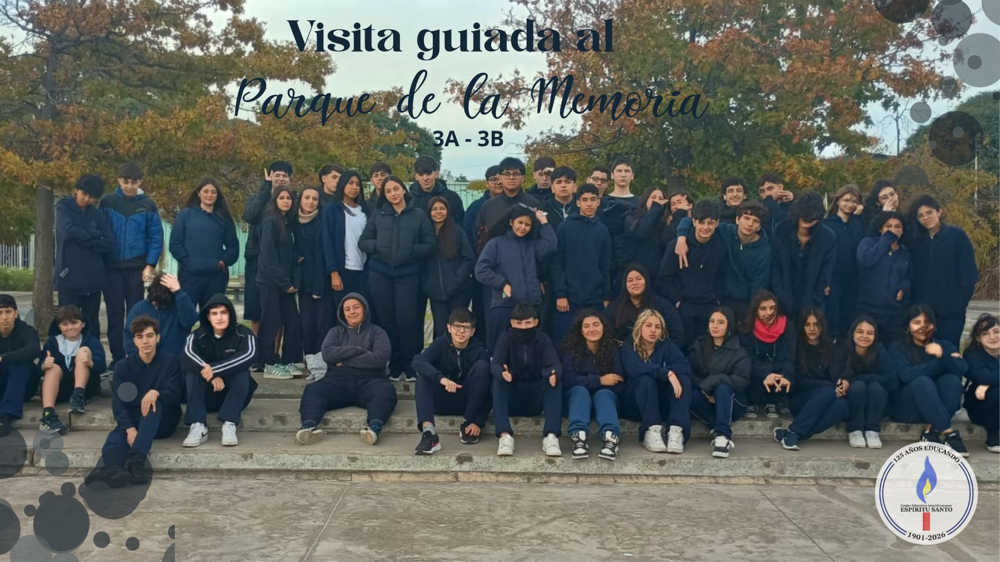

Visita guiada al Parque de la Memoria - Costanera Norte
Por: Morena Peralta y Manuel Rodriguez

Participaron los alumnos de 3°A y 3°B.
La visita al Parque de la Memoria fue una salida educativa organizada por el colegio. Salimos temprano en colectivo y durante el viaje pudimos ver la ciudad y la zona cercana al Río de la Plata. Al llegar, lo primero que impacta es la inmensidad del río y la ubicación abierta del parque, que se siente muy distinta al resto de la ciudad.
Durante la visita, nos explicaron la función del parque y su relación con la historia argentina, específicamente lo ocurrido durante el Proceso de Reorganización Nacional. Es un lugar pensado para no olvidar. Caminamos por los muros de hormigón donde están grabados los miles de nombres de las víctimas desaparecidas y asesinadas. Ver los nombres uno al lado del otro te ayuda a entender la magnitud de lo que pasó de una manera que los libros no siempre logran.
También hablamos sobre el significado de la ubicación frente al agua. El río no es solo un fondo lindo, sino que tiene que ver con los "traslados" y los vuelos de la muerte; estar ahí parados frente al mismo río donde pasaron esas cosas hace que la historia se sienta mucho más real y cercana.
Recorrimos distintas obras de arte que forman parte del predio. No son solo adornos, sino que cada una representa una idea sobre la identidad, el dolor o la búsqueda de justicia. Nos explicaron por qué fueron colocadas en esos puntos estratégicos y qué buscaba transmitir cada artista.
Una de las obras más conocidas y que más nos llamó la atención es la estatua que está ubicada directamente en el agua. Se trata de una figura humana que parece flotar sobre el río. Es un símbolo muy potente de la presencia de los que ya no están y de cómo el agua guarda esa memoria. Dependiendo de la marea y del sol, la estatua se ve distinta, lo que refuerza esa idea de algo que siempre está ahí aunque no siempre lo veamos igual.
Para cerrar, la salida nos sirvió para aprender sobre este período histórico fuera del aula. Fue una oportunidad para entender mejor el objetivo del Parque de la Memoria: usar el arte y el paisaje para que el pasado no se borre y para que podamos reflexionar sobre lo que significa el respeto y la vida hoy en día.